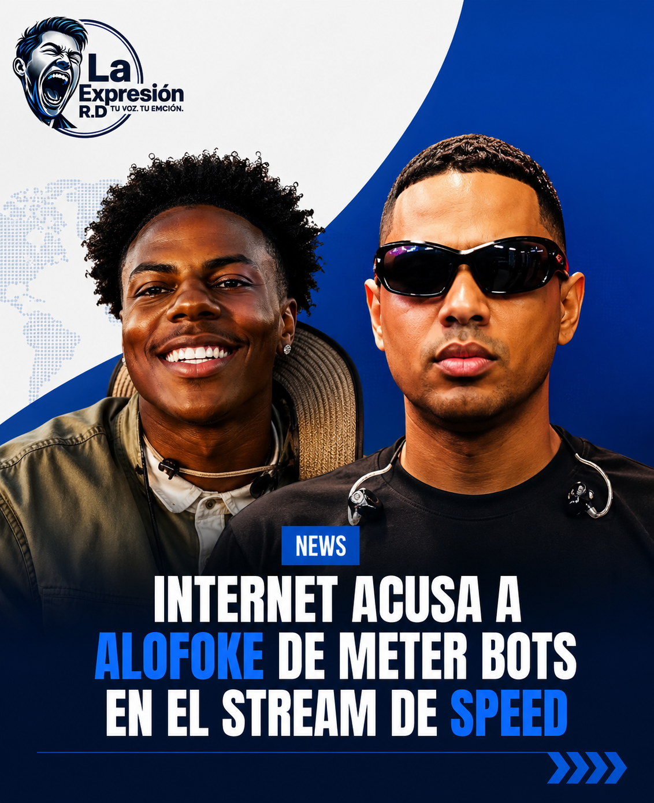

IShowSpeed acusa supuesto uso de bots en stream relacionado con Alofoke

El streamer internacional IShowSpeed desató una fuerte controversia en redes sociales luego de asegurar durante una transmisión que parte de las visualizaciones obtenidas en su reciente stream en República Dominicana habrían sido alteradas por bots. Las acusaciones apuntaron indirectamente hacia el entorno de Santiago Matías, conocido popularmente como Alofoke, quien participó en varios momentos de la visita del creador de contenido al país. Según usuarios y clips viralizados en redes, Speed comentó que representantes de YouTube le habrían informado que una parte importante de los espectadores detectados durante la transmisión no eran cuentas reales.
La situación provocó miles de reacciones y abrió un debate sobre el supuesto uso de bots en streams y plataformas digitales. Tras la polémica, varios streamers y creadores de contenido comenzaron a reaccionar públicamente. Algunos criticaron a Alofoke y cuestionaron la autenticidad de ciertas cifras de audiencia, mientras otros defendieron al comunicador dominicano asegurando que su popularidad en redes es legítima.